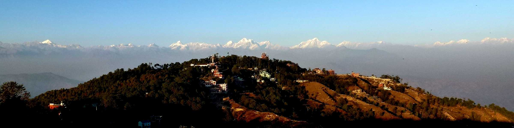
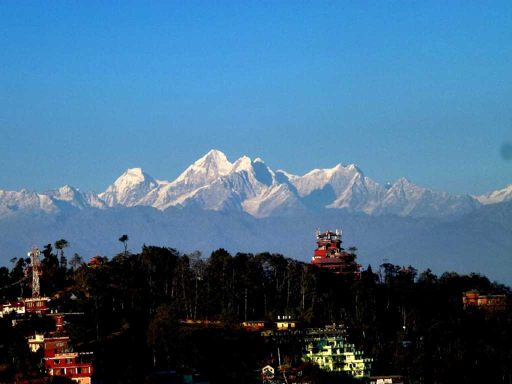
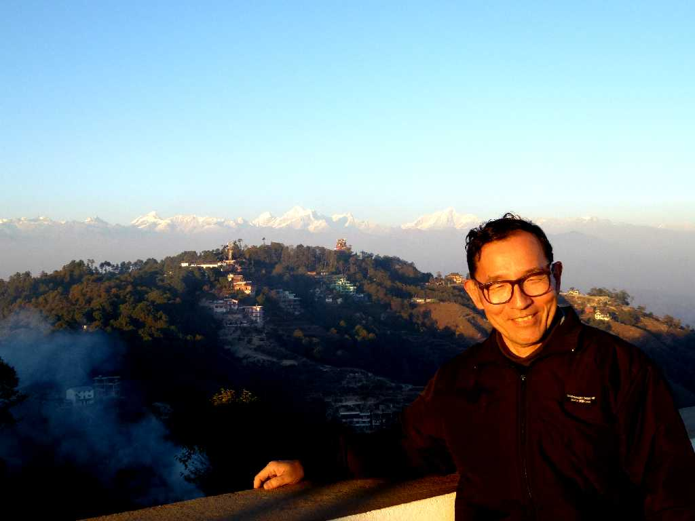
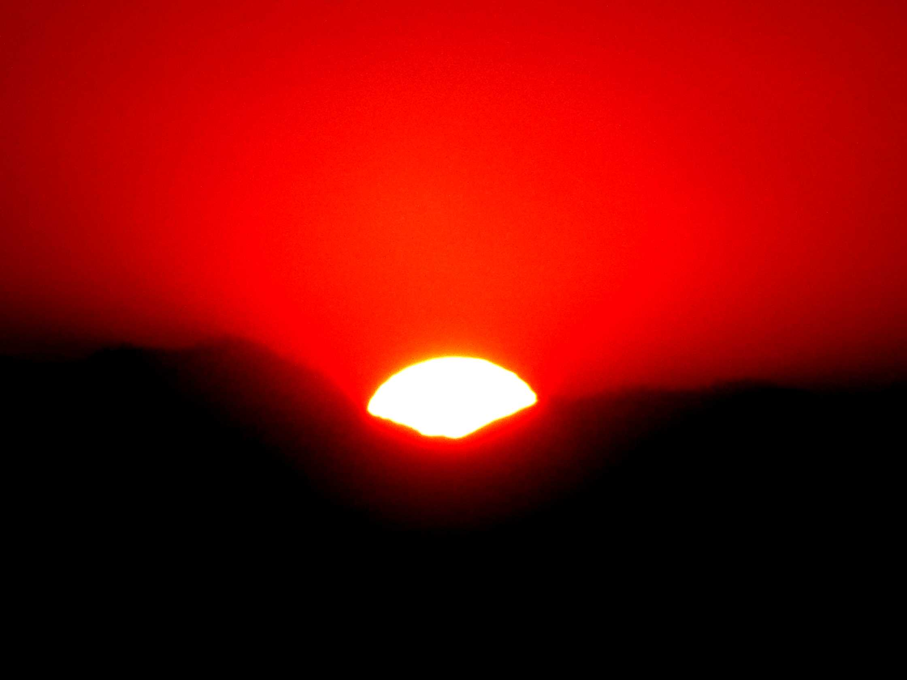
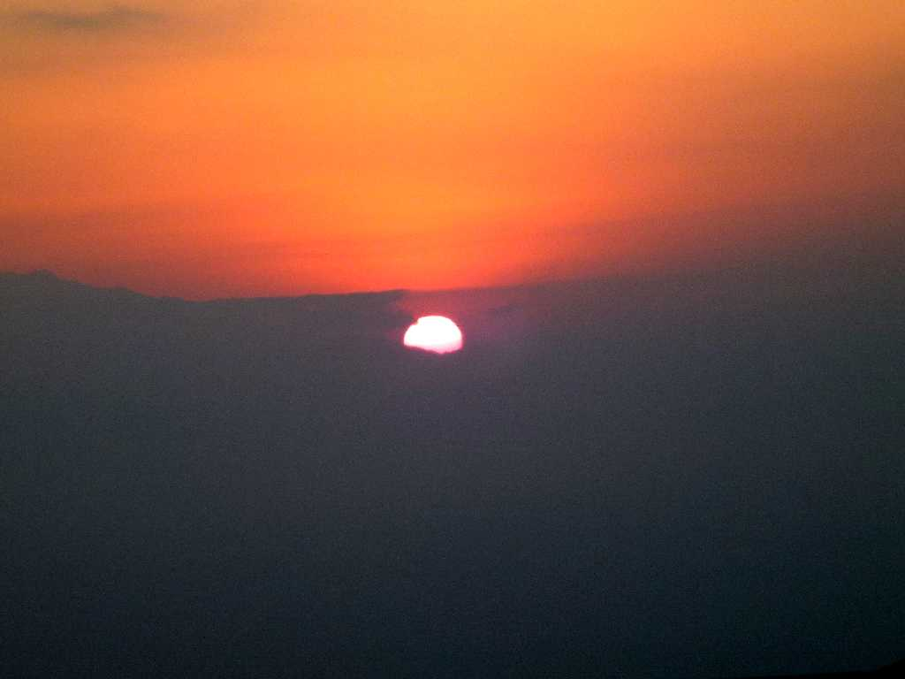

Himalaya Range Nagarkot
８,０００ｍ以上の高峰全てがヒマラヤ山系に１４座あり７,０００ｍ以上の高峰は２００座以上ある

Everest Himalaya Nagrkot

December 31 2012 Nagarkot

December 31 2012 17:17 Sunset Nagarkot
ナガルコットで２０１２年大晦日の日の入

January 1 2013 6:57 Sunrise Nagarkot
ナガルコットで２０１３年元旦の日の出